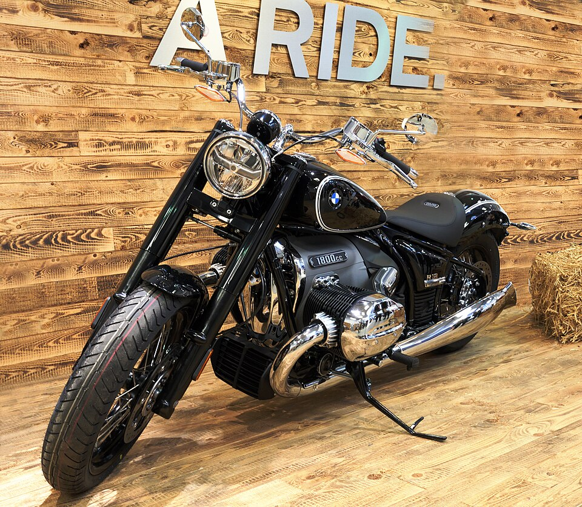
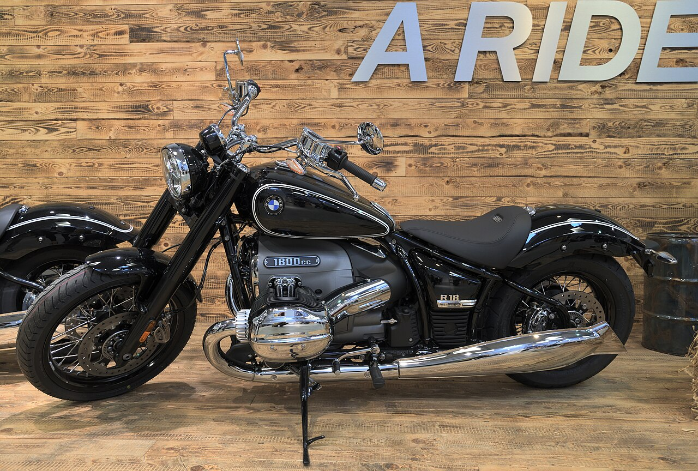
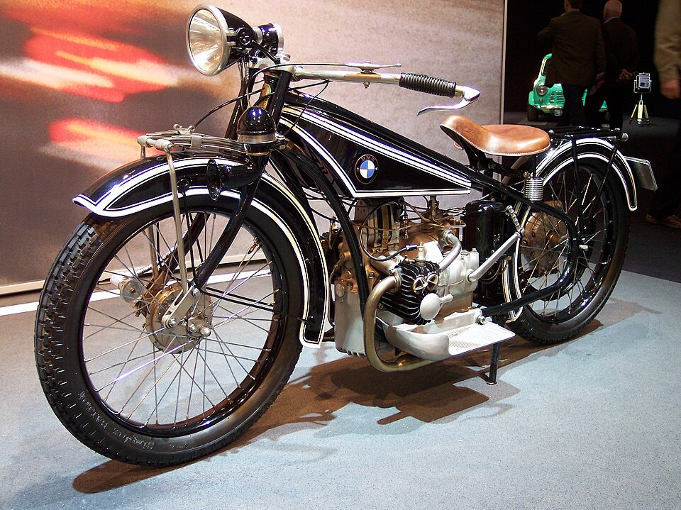
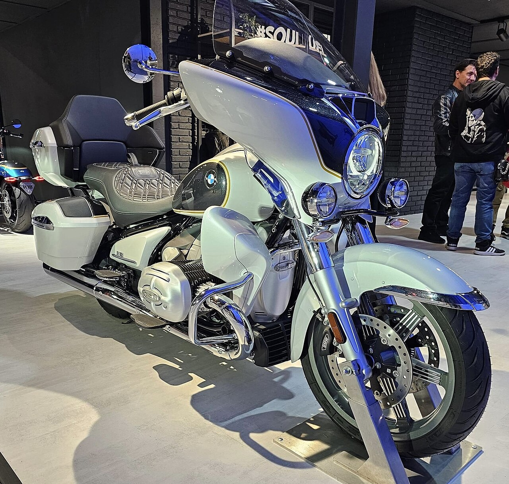
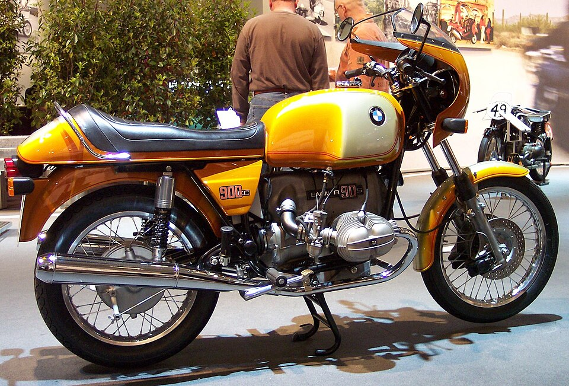

The largest boxer engine BMW has ever built — a century of heritage in a 21st-century cruiser.

The R18 is the product of a century of boxer engine tradition. Its roots trace directly to 1923, when Max Friz sketched the horizontally-opposed twin that would define BMW Motorrad forever. The R18 is not a retro tribute — it is a living continuation of that lineage, reimagined for the cruiser era.
Designer Max Friz debuted the R32 at the Paris Motor Show — a 486cc boxer twin with shaft drive. Both defining traits survive in the R18 a century later. The horizontally-opposed layout was chosen to balance vibration and keep the centre of gravity low. Over 10 million BMW motorcycles have since inherited this architecture.
The R5 is widely regarded as the most beautiful pre-war BMW motorcycle ever built. Its clean engine cases, exposed valve train, chrome fuel tank panels, and minimalist frame created a visual language of mechanical elegance. When BMW designers began sketching the R18, the R5 was pinned to the wall as their primary reference. The R18's exposed rocker arms, chrome tank strips, and hand-built engine plaques are direct descendants of that 1936 blueprint.
The R90S proved the boxer could be more than a tourer — it won the inaugural AMA Superbike Championship in 1976 with Reg Pridmore. Its 898cc engine and distinctive half-fairing established BMW's performance identity. The design house Pininfarina cited it as an influence. Original "Smoke" examples now command five-figure prices at auction.
BMW Motorrad began development of a flagship cruiser to enter the premium American-style market dominated by Harley-Davidson. The internal goal was audacious: build a boxer engine larger than anything BMW had ever produced. Early prototypes used a 1,800cc layout with visible cylinder heads, chrome details, and a full double-cradle steel frame — aesthetic choices that would survive unchanged to production.
Shown at Villa d'Este's Concorso d'Eleganza — the most prestigious automotive design show in the world — the Concept R18 was received as a production-ready statement, not a styling exercise. Its double-loop frame, exposed Big Boxer engine with hand-polished cases, and springer-style details drew instant acclaim. BMW confirmed production within months.
The production R18 arrived with an 1802cc "Big Boxer" — the largest displacement boxer BMW has ever built. Each engine is hand-assembled at the Berlin-Spandau factory and carries a numbered commemorative plate. 91 hp and a massive 158 Nm of torque arrive at a low 3,000 rpm, delivering the long, rolling power delivery that defines the cruiser experience.
BMW expanded the R18 into a full family: the base R18, the R18 Classic (bobber-influenced with windscreen and valanced fenders), the R18 B (bagger with hard panniers and fairing), and the R18 Transcontinental (full grand tourer with Bowers & Wilkins audio, top case, and heated grips). All share the identical 1802cc engine.
BMW partnered with renowned American custom builder Roland Sands Design to create the R18 Roctane — the most aggressive variant in the family. Blacked-out engine cases, custom seat with contrast stitching, footrests moved rearward for a sportier riding position, and a stripped aesthetic that removes the chrome flourishes of other variants. The Roctane is the performance end of the R18 spectrum.
The 1802cc horizontally-opposed twin at the heart of the R18 is the largest and most powerful boxer engine BMW has ever produced. It is the definitive statement of what 100 years of boxer development can become.
In an era where manufacturers rush to water-cooling for efficiency, BMW deliberately chose to keep
the Big Boxer air and oil cooled. The reason is aesthetic and philosophical: the large
cylinder heads must be visible, prominent, and warm — they are the visual centrepiece of the
motorcycle. Water jackets would hide them.
Each engine is assembled by hand at BMW Motorrad's Berlin-Spandau factory, the oldest
BMW plant in operation. A numbered commemorative plate is affixed to every engine — a tradition
borrowed from exclusive automobiles, now applied to motorcycles for the first time.
The exposed rocker arms, polished engine cases, and chrome cylinder covers are not decoration —
they are structural components displayed without apology, carrying the same engineering logic
Max Friz established in 1923.
Five variants, one engine. Every R18 uses the identical 1802cc Big Boxer — but the rider experience ranges from a stripped bobber to a fully-equipped grand tourer with Bowers & Wilkins audio.




Every detail of the R18's design traces back to a specific historical reference. BMW's design team studied pre-war and post-war BMW motorcycles for three years before committing to the production design. Nothing is arbitrary.
The R18's steel double-loop frame runs exposed along both sides of the motorcycle — intentionally visible, never hidden under bodywork. This directly references the exposed frames of 1930s BMW motorcycles where structural tubes were a visual feature. The frame is painted or chromed to the owner's specification, not powder-coated and hidden.
The rocker arms, pushrods, and valve covers are openly displayed rather than enclosed in a cover. This was the practice on BMW boxers from the 1923 R32 through the 1960s, before modern manufacturing moved toward sealed, maintenance-free engines. The R18 revives it as a deliberate aesthetic statement: mechanical beauty deserves to be seen.
The R18 uses chrome on the engine cases, exhaust headers, cylinder covers, fuel tank panels, and frame details — not as aftermarket luxury but as factory standard specification. The three-dimensional tank badge is hand-applied. Chrome spoke wheels and whitewall tyres are a factory option. BMW describes the R18 as the most visually deliberate motorcycle they've produced since the R90S in 1973.
Each engine's hand-assembly is documented with a commemorative plate carrying the serial number, affixed to the crankcase. This tradition — common in Rolls-Royce and Bentley engines — has never before appeared on a production motorcycle. It reflects BMW's position of the R18 as a luxury object as much as a functional motorcycle.
The 16-inch front wheel and wide 130mm front tyre — combined with the engine's horizontally-opposed cylinders extending to 870mm overall width — give the R18 its distinctive broad stance. The 1802cc cylinders are the widest visible feature of the motorcycle when viewed head-on, framing the rider in a way no conventional engine layout could achieve.
Standard colours include Option 719 Mineral White Metallic and Manhattan Metallic (a blue-grey that references 1960s BMW Motorrad colours), along with custom options through BMW's Option 719 personalisation programme. Special Edition models have included hand-painted pin-striping, aged leather seats, and polished aluminium tank filler caps — echoing bespoke motorcycle traditions.